Rentesregning Excel
Excel-funktioner til finansielle beregninger
Excel tilbyder en række funktioner til finansielle beregninger, disse funktioner gennemgås på denne
side med eksempler og forklaringer.
Disse funktioner kan
anvendes både til
annuiteter (se særskilt kapitel) og til enkeltstående kapitalbeløb:
| Funktion |
Engelsk Funktion |
Beskrivelse |
Forklaring |
| FV |
FV |
(Fremtidsværdi) |
Beregner den fremtidige værdi af en investering baseret på periodiske, konstante
betalinger og en
konstant rente. Kan også bruges til at beregne fremtidsværdien af en enkeltstående
kapital ved at
sætte Ydelse til 0 eller lade den være tom. |
| NPER |
NPER |
Antal perioder |
Beregner antallet af perioder for en investering baseret på periodiske, konstante
betalinger og en
konstant rente. Kan også bruges til at beregne, hvor lang tid det tager for en kapital
at vokse til
et bestemt beløb ved at sætte Ydelse til 0 eller lade den være tom. |
| NV |
PV |
Nutidsværdi |
Beregner den nuværende værdi af en investering baseret på fremtidige betalinger. Kan
også bruges til
at beregne nutidsværdien af et fremtidigt enkeltstående beløb ved at sætte Ydelse til 0
eller lade
den være tom. |
| RENTE |
RATE |
Terminsrenten |
Beregner rentesatsen pr. periode for en annuitet. Kan også bruges til at beregne
vækstraten for en
kapital over en given periode ved at sætte Ydelse til 0 eller lade den være tom. |
| YDELSE |
PMT |
Ydelsen pr. termin |
Beregner betalingen for et lån baseret på konstante betalinger og en konstant rente
(disse lige store betalinger kaldes for en annuitet). Kan
også bruges
til at beregne den nødvendige periodiske indbetaling for at nå et opsparingsmål. |
| 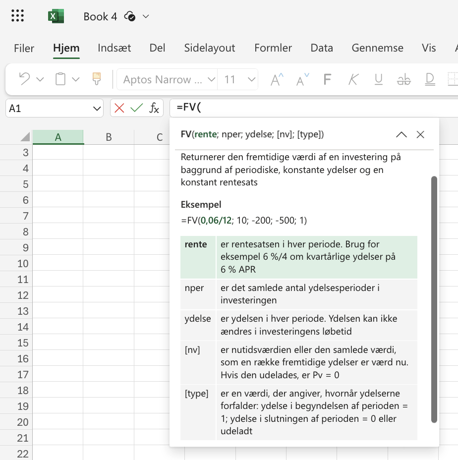 |
Det er værd at bemærke, at disse funktioner kan bruges til rentesregning ved at sætte Ydelse til 0
eller lade den
være tom. Dette er nyttigt, når man arbejder med enkeltstående ind- eller udbetalinger frem for
regelmæssige
betalinger.
En vigtig detalje at huske er, at alle disse finansfunktioner indeholder et argument kaldet "type".
Dette argument
angiver, om betalinger foretages i begyndelsen eller slutningen af hver periode. Normalt sætter vi
ikke noget ind i
dette argument, da ydelser typisk betales sidst i terminen. Excel antager som standard, at
betalinger sker i slutningen
af perioden, hvis type-argumentet udelades.
Ved at justere de forskellige parametre i disse funktioner, kan man løse mange
finansielle opgaver, fra simple renteberegninger til mere komplekse investeringsanalyser.
Fremskrivning af kapital
Fremskrivning af kapital er en grundlæggende økonomisk beregning, der viser, hvordan penge vokser
over tid.
Fremskrivning
tager højde for
rentes rente effekten, hvilket betyder, at man ikke bare tjener renter på den oprindelige
investering, men også
på de renter, der er optjent i tidligere perioder.
Eksempel FV 1:
| Tekst |
Værdier |
Excel uden FV |
Excel med FV |
Resultat |
| En opsparing på 100 kr. vokser med en årlig rente på 2% over 1 år |
Startkapital = 100
Rente = 2%
År = 1 |
=100*(1+2%)^1 |
=FV(2%;1;0;-100) |
102,00 kr. |
| 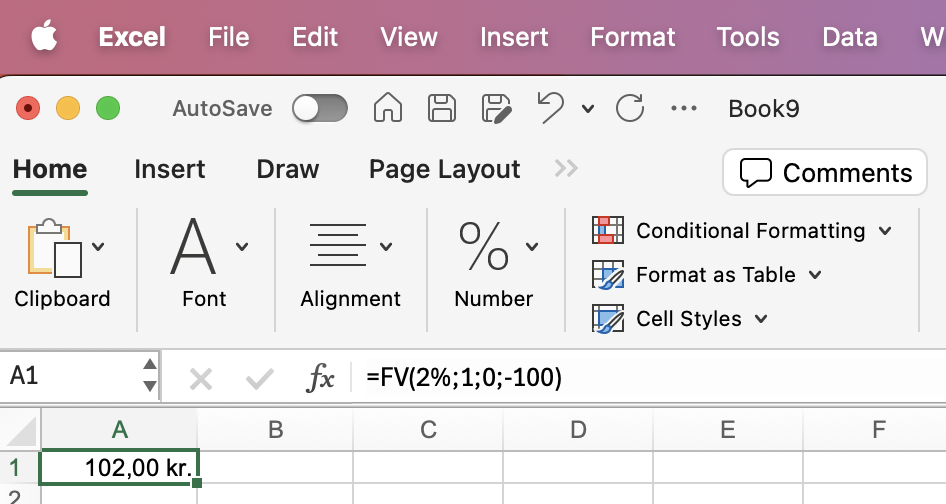 |
Eksempel FV 2:
| Tekst |
Værdier |
Excel uden FV |
Excel med FV |
Resultat |
| En opsparing på 100 kr. vokser med en årlig rente på 2% over 2 år |
Startkapital = 100
Rente = 2%
År = 1 |
=100*(1+2%)^1 |
=FV(2%;1;0;-100) |
104,40 kr. |
| 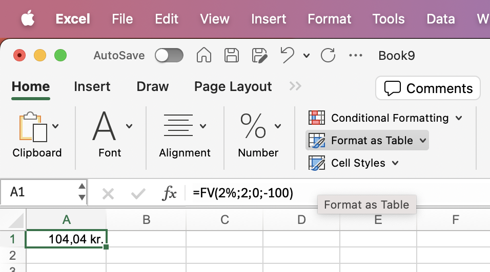 |
Bemærk på grund af renters rente vokser kapitalen til 104,40 kr. og ikke blot 104,00 kr.
Eksempel FV 3:
| Tekst |
Værdier |
Excel uden FV |
Excel med FV |
Resultat |
| En opsparing på 1000 kr. vokser med en årlig rente på 3% over 5 år |
Startkapital = 1000
Rente = 3%
År = 5 |
=1000*(1+3%)^5 |
=FV(3%;5;0;-1000) |
1159,27 kr. |
| 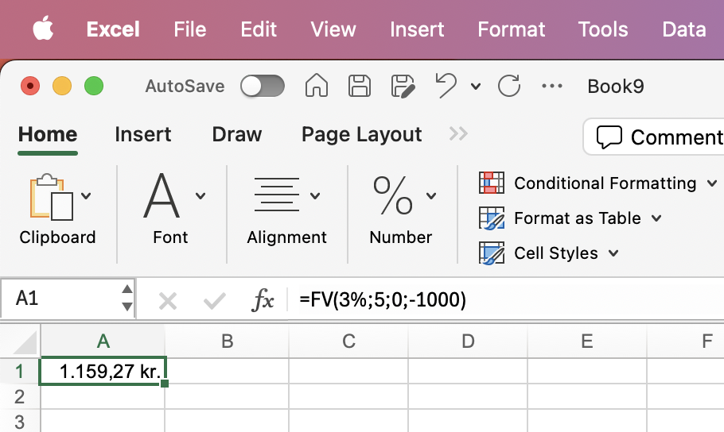 |
Eksempel FV 4:
| Tekst |
Værdier |
Excel uden FV |
Excel med FV |
Resultat |
| En opsparing på 10000 kr. vokser med en årlig rente på 4% over 20 år |
Startkapital = 10000
Rente = 4%
År = 20 |
=10000*(1+4%)^20 |
=FV(4%;20;0;-10000) |
21911,23 kr. |
| 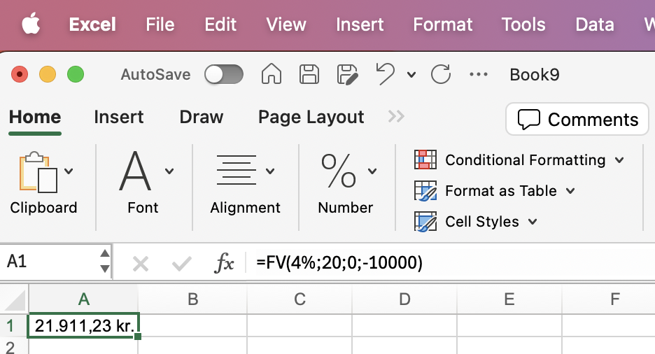 |
Disse eksempler illustrerer, hvordan en kapital vokser over forskellige tidshorisonter. Bemærk, at jo
længere
tidshorisonten er, desto større bliver effekten af rentes rente. Excel's FV-funktion gør
beregningerne enklere,
men det er også muligt at udføre beregningerne uden denne funktion ved at bruge formlen for renters
rente:
Slutværdi = Startkapital * (1 + rente)^år.
Nutidsværdi af kapital
Nutidsværdi er en fundamental økonomisk beregning, der viser værdien af fremtidige pengestrømme
omregnet til
nutidens værdi. Dette koncept er vigtigt for at forstå, hvordan fremtidige beløb skal vurderes i
dag, givet at
penge har en tidsværdi. Nutidsværdiberegninger tager højde for, at et beløb modtaget i fremtiden er
mindre værd
end det samme beløb modtaget i dag, primært på grund af inflation og alternative
investeringsmuligheder.
Eksempel NV 1:
| Tekst |
Værdier |
Excel uden NV |
Excel med NV |
Resultat |
| Nutidsværdien af 102 kr. om 1 år med en diskonteringsrente på 2% |
Fremtidigt beløb = 102
Rente = 2%
År = 1 |
=102/(1+2%)^1 |
=NV(2%;1;0;-102) |
100,00 kr. |
| 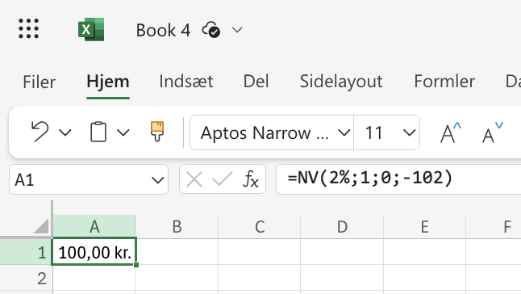 |
Eksempel NV 2:
| Tekst |
Værdier |
Excel uden NV |
Excel med NV |
Resultat |
| Nutidsværdien af 1159,27 kr. om 5 år med en diskonteringsrente på 3% |
Fremtidigt beløb = 1159,27
Rente = 3%
År = 5 |
=1159,27/(1+3%)^5 |
=NV(3%;5;0;-1159,27) |
1000,00 kr. |
| 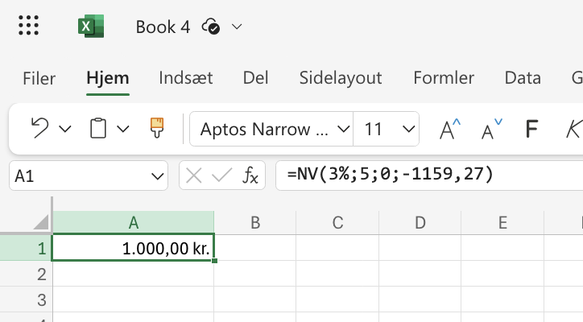 |
Eksempel NV 3:
| Tekst |
Værdier |
Excel uden NV |
Excel med NV |
Resultat |
| Nutidsværdien af 21911,23 kr. om 20 år med en diskonteringsrente på 4% |
Fremtidigt beløb = 21911,23
Rente = 4%
År = 20 |
=21911,23/(1+4%)^20 |
=NV(4%;20;0;-21911,23) |
10000,00 kr. |
| 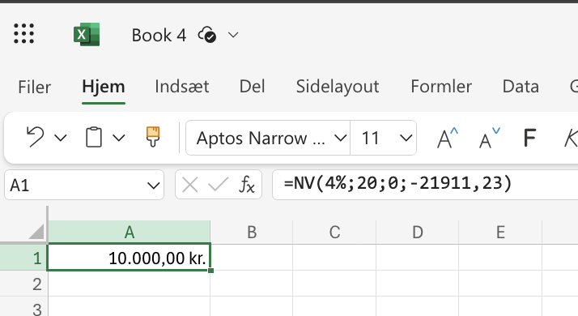 |
Disse eksempler illustrerer, hvordan nutidsværdien af et fremtidigt beløb beregnes over forskellige
tidshorisonter. Bemærk, at jo længere tidshorisonten er, desto mindre bliver nutidsværdien af et
givet
fremtidigt beløb. Excel's NV-funktion gør beregningerne enklere, men det er også muligt at udføre
beregningerne
uden denne funktion ved at bruge formlen for nutidsværdi: Nutidsværdi = Fremtidigt beløb / (1 +
rente)^år.
Beregning af antal perioder for kapitalvækst
Når man investerer kapital eller optager et lån, er det ofte relevant at vide, hvor lang tid det
tager før
kapitalen er vokset til et bestemt beløb. Dette kan beregnes ved hjælp af renters rente-formlen og
logaritmer.
Excel tilbyder også en funktion, NPER, der gør beregningen enkel.
Eksempel NPER 1:
| Tekst |
Værdier |
Excel uden NPER |
Excel med NPER |
Resultat |
| Hvor mange år tager det for 1000 kr. at vokse til 1100 kr. med en rente på 2% p.a.? |
Startkapital = 1000
Slutkapital = 1100
Rente = 2% |
=LN(1100/1000)/LN(1+2%) |
=NPER(2%;0;-1000;1100) |
4,81 år |
| 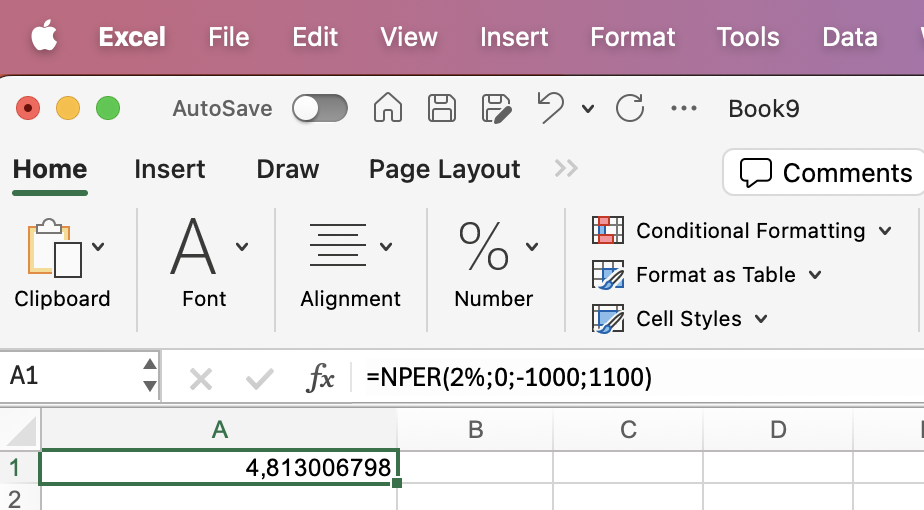 |
Eksempel NPER 2:
| Tekst |
Værdier |
Excel uden NPER |
Excel med NPER |
Resultat |
| Hvor mange år tager det for 5000 kr. at fordobles med en rente på 5% p.a.? |
Startkapital = 5000
Slutkapital = 10000
Rente = 5% |
=LN(10000/5000)/LN(1+5%) |
=NPER(5%;0;-5000;10000) |
14,21 år |
| 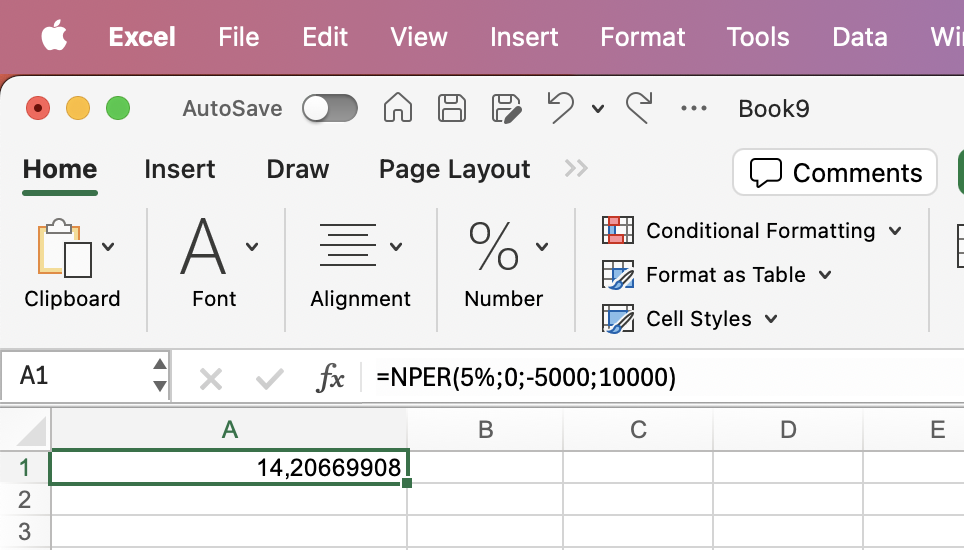 |
Eksempel NPER 3:
| Tekst |
Værdier |
Excel uden NPER |
Excel med NPER |
Resultat |
| Hvor mange år tager det for 10000 kr. at vokse til 100000 kr. med en rente på 3% p.a.? |
Startkapital = 10000
Slutkapital = 100000
Rente = 3% |
=LN(100000/10000)/LN(1+3%) |
=NPER(3%;0;-10000;100000) |
77,90 år |
| 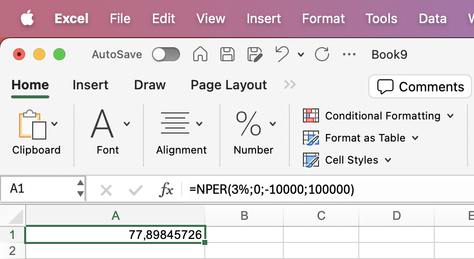 |
Disse eksempler viser, hvordan man kan beregne det antal perioder (år), det tager for en given
startkapital at
vokse til en ønsket slutkapital ved en bestemt rente. Formlen uden brug af Excel's NPER-funktion er
baseret på
logaritmer: Antal perioder = LN(Slutkapital/Startkapital) / LN(1+rente). Excel's NPER-funktion gør
beregningen
enklere, men det er nyttigt at forstå den underliggende formel. Bemærk, at jo lavere renten er,
eller jo større
forskellen er mellem start- og slutkapital, desto længere tid tager det for kapitalen at vokse til
det ønskede
beløb.
Beregning af rente
At beregne renten er en vigtig del af mange finansielle analyser. Hvad enten det drejer sig om
investeringer, lån
eller opsparinger, er det ofte nødvendigt at finde den effektive rente. Excel's RENTE-funktion gør
denne
beregning
enkel, men det er også muligt at udføre beregningen manuelt.
Eksempel RENTE 1:
| Tekst |
Værdier |
Excel uden RENTE |
Excel med RENTE |
Resultat |
| Hvad er den årlige rente, hvis 1000 kr. vokser til 1050 kr. på 1 år? |
Startkapital = 1000
Slutkapital = 1050
År = 1 |
=(1050/1000)^(1/1)-1 |
=RENTE(1;0;-1000;1050) |
5,00% |
| 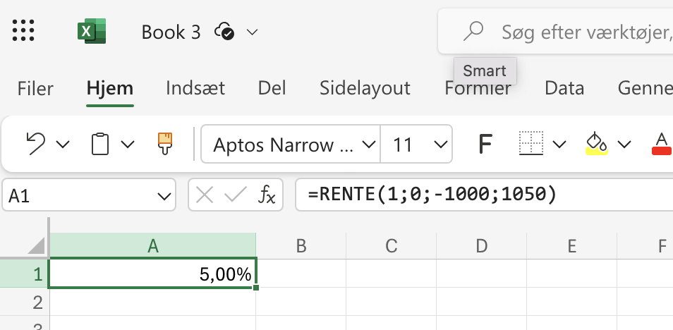 |
Eksempel RENTE 2:
| Tekst |
Værdier |
Excel uden RENTE |
Excel med RENTE |
Resultat |
| Hvad er den årlige rente, hvis 5000 kr. vokser til 7500 kr. på 5 år? |
Startkapital = 5000
Slutkapital = 7500
År = 5 |
=(7500/5000)^(1/5)-1 |
=RENTE(5;0;-5000;7500) |
8,45% |
| 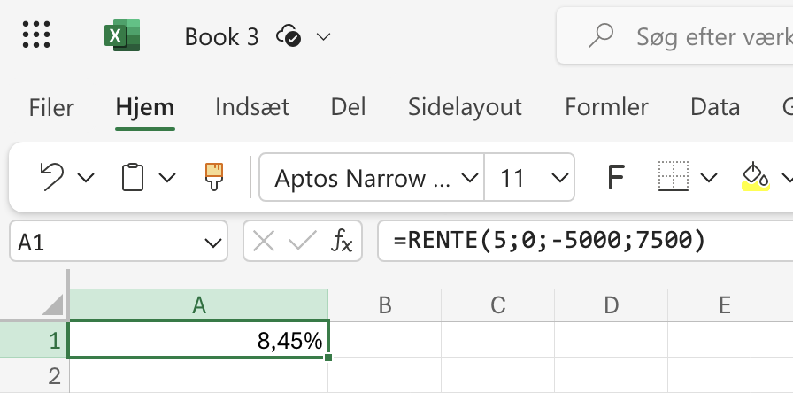 |
Eksempel RENTE 3:
| Tekst |
Værdier |
Excel uden RENTE |
Excel med RENTE |
Resultat |
| Hvad er den årlige rente, hvis 10000 kr. vokser til 50000 kr. på 20 år? |
Startkapital = 10000
Slutkapital = 50000
År = 20 |
=(50000/10000)^(1/20)-1 |
=RENTE(20;0;-10000;50000) |
8,38% |
 |
Disse eksempler illustrerer, hvordan man kan beregne den årlige rente for forskellige scenarier ved
hjælp
af Excel's
RENTE-funktion. Formlen uden brug af RENTE-funktionen er baseret på n'te rod: Årlig rente =
(Slutkapital/Startkapital)^(1/antal år) - 1. Excel's RENTE-funktion gør beregningen enklere, men det
er
nyttigt at
forstå den underliggende formel. Bemærk, at jo kortere perioden er, eller jo større forskellen er
mellem
start- og
slutkapital, desto højere bliver den beregnede rente.
Beregning af årlig effektiv rente fra terminsrente
Når man arbejder med investeringer eller lån, støder man ofte på renter opgivet for forskellige
terminer. For at
sammenligne disse renter korrekt, er det nødvendigt at omregne dem til en fælles basis, typisk den
årlige effektive
rente.
Det er vigtigt at være opmærksom på, at den terminsrente, som banker ofte viser i deres dokumenter,
typisk er
omregnet til en årlig nominel rente. Denne årlige nominelle rente er lavere end den reelle årlige
effektive rente.
For eksempel kan en bank angive en månedlig rente på 0,5%, hvilket giver en årlig nominel rente på:
6% (0,5% * 12
måneder)
Men den årlige effektive rente, som tager højde for renters rente, vil være højere,
nemlig:
6,17% ((1 +
0,5%)^12 - 1)
Denne forskel kan virke lille, men over tid og ved større beløb kan den have en
betydelig indvirkning
på de samlede omkostninger eller afkast.
Eksempel 1: Månedlig til årlig rente
| Tekst |
Værdier |
Excel-formel |
Resultat |
| Hvad er den årlige effektive rente, hvis den månedlige rente er 0,5%? |
Månedlig rente = 0,5%
Terminer pr. år = 12 |
=(1+0,5%)^12-1 |
6,17% |
| 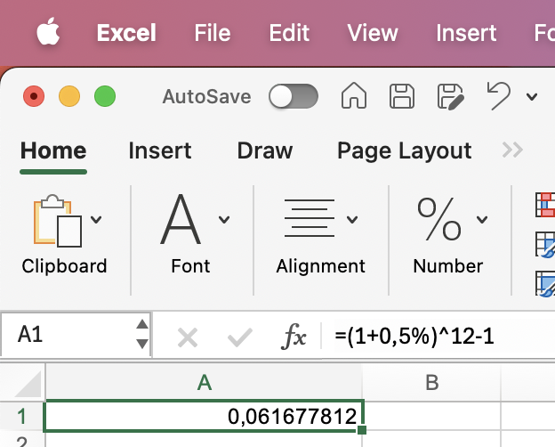 |
Eksempel 2: Kvartalsvis til årlig rente
| Tekst |
Værdier |
Excel-formel |
Resultat |
| Hvad er den årlige effektive rente, hvis den kvartalsvise rente er 2%? |
Kvartalsvis rente = 2%
Terminer pr. år = 4 |
=(1+2%)^4-1 |
8,24% |
| 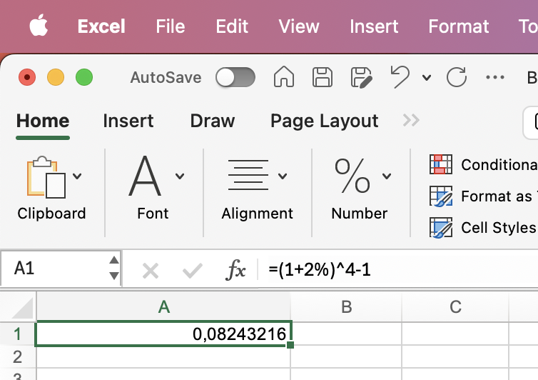 |
Eksempel 3: Daglig til årlig rente
| Tekst |
Værdier |
Excel-formel |
Resultat |
| Hvad er den årlige effektive rente, hvis den daglige rente er 0,02%? |
Daglig rente = 0,02%
Terminer pr. år = 365 |
=(1+0,02%)^365-1 |
7,57% |
| 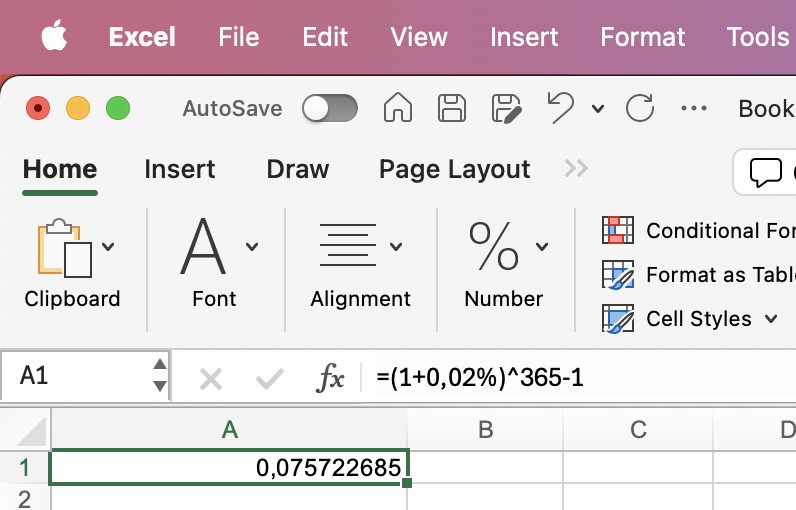 |
Disse eksempler viser, hvordan man kan beregne den årlige effektive rente ud fra terminsrenter.
Formlen er: Årlig
effektiv rente = (1 + terminsrente)^(antal terminer pr. år) - 1. Bemærk, at den årlige effektive
rente altid vil
være højere end den nominelle årlige rente (terminsrente * antal terminer) på grund af renters rente
effekten.
Jo flere terminer pr. år, desto større bliver forskellen mellem den nominelle og den effektive
rente.
Beregning af terminsrente fra årlig effektiv rente
I mange finansielle situationer er det nødvendigt at omregne en årlig effektiv rente til en
terminsrente, for
eksempel for at beregne månedlige ydelser på et lån. Denne omregning tager højde for renters rente
effekten og
sikrer præcise beregninger.
Eksempel 1: Årlig til månedlig rente
| Tekst |
Værdier |
Excel-formel |
Resultat |
| Hvad er den månedlige rente, hvis den årlige effektive rente er 6%? |
Årlig effektiv rente = 6%
Terminer pr. år = 12 |
=(1+6%)^(1/12)-1 |
0,49% |
| 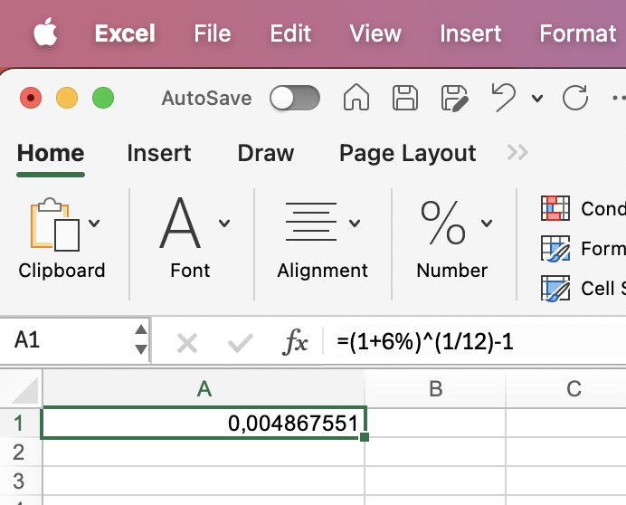 |
Eksempel 2: Årlig til kvartalsvis rente
| Tekst |
Værdier |
Excel-formel |
Resultat |
| Hvad er den kvartalsvise rente, hvis den årlige effektive rente er 10%? |
Årlig effektiv rente = 10%
Terminer pr. år = 4 |
=(1+10%)^(1/4)-1 |
2,41% |
| 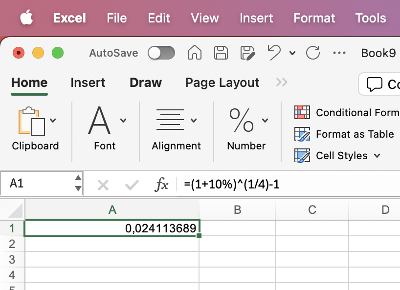 |
Eksempel 3: Årlig til daglig rente
| Tekst |
Værdier |
Excel-formel |
Resultat |
| Hvad er den daglige rente, hvis den årlige effektive rente er 8%? |
Årlig effektiv rente = 8%
Terminer pr. år = 365 |
=(1+8%)^(1/365)-1 |
0,0211% |
 |
Disse eksempler illustrerer, hvordan man kan beregne terminsrenten ud fra den årlige effektive rente.
Formlen er:
Terminsrente = (1 + årlig effektiv rente)^(1/antal terminer pr. år) - 1.
Bemærk, at terminsrenten
altid vil være
lavere end den årlige effektive rente divideret med antal terminer pr. år, på grund af renters rente
effekten.
Jo flere terminer pr. år, desto større bliver denne forskel.
Quiz
Quiz rentebegrebet
Quiz Rentesregning Excel